Manual de marca y sistema de diseño
Cómo se ve, cómo se escribe y cómo se construye todo lo que lleva la marca valentindg: desde el logotipo hasta el último botón de una aplicación. Este documento usa los mismos tokens, fuentes y componentes que las aplicaciones, así que lo que ves aquí es exactamente lo que se entrega.
01
La marca
valentindg hace software de gestión a medida: CRM y ERP para empresas que necesitan ver su negocio claro y trabajar sin fricción. La marca tiene que transmitir lo mismo que el producto: orden, precisión y trato cercano.
Personalidad
Precisa
Cifras exactas, fechas reales, nada de adornos que distraigan del dato. Si algo se muestra, es porque sirve.
Sobria
Un solo color de acento, mucho blanco y grises cálidos. La identidad está en la tipografía y en el cuidado del detalle; el único efecto es el cristal de la navegación.
Cercana
Se habla de tú, en español de España, con frases cortas y concretas. Como lo diría alguien del equipo, no un folleto.
Principios de diseño
Primero lo que hay que hacer
Las pantallas empiezan por la acción del día (agenda, cobros, tareas) y después muestran las cifras. Los gráficos acompañan, no protagonizan.
Un acento, no un arcoíris
El coral marca acciones, elementos activos y alertas. Todo lo demás es tinta y grises lavanda. Si todo destaca, nada destaca.
La tipografía es la identidad
Instrument Sans para la interfaz y DM Mono para importes y códigos. Los céntimos van atenuados: es el detalle que nos reconoce.
Nada de efectos genéricos
Sin brillos ni degradados en los componentes (salvo la tarjeta de objetivo y el cristal de la capa de navegación), sin elevar los botones al pasar el ratón, sin iconos de destellos. Lo que se mueve, se mueve por una razón.
02
Logotipo
La marca se escribe valentindg y se firma con el monograma VDG, las iniciales de Valentín De Gennaro. El monograma tiene dos versiones: la de una tinta, para la interfaz y los documentos, y el original metálico con brillo, solo para iconos de aplicación e imágenes de redes, siempre sobre fondo oscuro.
Nombre
- El nombre se escribe valentindg: en minúsculas, todo junto y sin punto, también al empezar una frase.
- VDG es el monograma: se dibuja, no se escribe. En textos, títulos, firmas o nombres de empresa va valentindg, nunca «VDG».
- Donde haga falta el nombre completo (CV, contratos, facturas), va Valentín De Gennaro.
Versión horizontal
«valentindg» en Instrument Sans 600, a dos tercios de la altura del monograma y convertido en trazos. Donde el espacio es cuadrado o pequeño (avatar, favicon) va el monograma solo.
Logo y nombre de la app
Cada aplicación o web de la marca se firma con el monograma, una línea fina y el nombre del producto. Así se ve de quién es y qué es de un vistazo, sin repetir «valentindg».
Medidas
- Monograma de 26 px de alto (22 px en móvil pequeño).
- Línea de 1 px en --color-border-strong, de 20 px de alto, con 12 px a cada lado.
- Nombre en Instrument Sans 600, 14 px, del color del texto.
- Componente listo: .lockup en components.css.
Reglas
- El nombre se escribe como el producto: «CodePanel», «Portafolio», «Currículum». Ni en mayúsculas, ni en coral, ni en otra fuente.
- Para la marca en sí (firma, portada, documento) va la versión horizontal con «valentindg», sin línea.
- Nunca las tres cosas juntas: monograma | valentindg | app.
- Si no hay sitio (barra lateral de 76 px, favicon, icono de app) va el monograma solo y el nombre pasa al título de la página.
Monograma
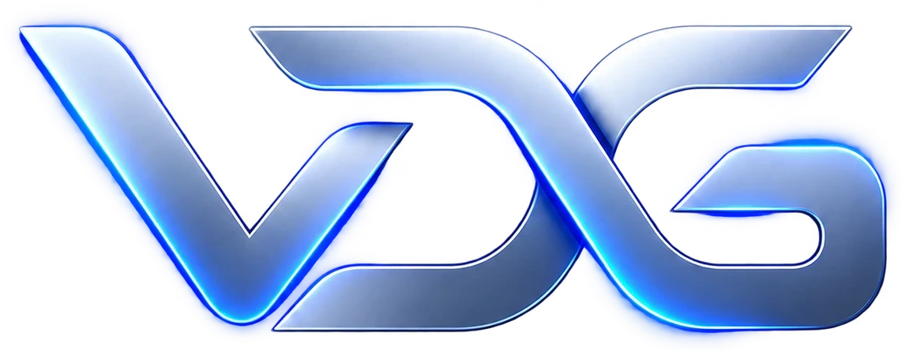
Área de respeto y tamaño mínimo
Reglas
- Alrededor del logo queda libre, como mínimo, la mitad de su altura (x) por cada lado.
- Tamaño mínimo en pantalla: 20 px de alto. En impresión: 8 mm.
- Por debajo de 24 px (favicon, pestañas) se usa el icono cuadrado: logo blanco sobre tinta.
- En la cabecera de la app mide 26 px de alto (22 px en móvil pequeño), junto al nombre de la app.
Usos incorrectos
03
Color
Una paleta corta: tinta para el texto, grises lavanda para la estructura y un único acento coral. Los valores se leen en directo de tokens.css: si cambias un token, este manual cambia con él. Pulsa un código para copiarlo. En los colores de texto se indica su contraste sobre la superficie del tema (AA pide 4,5:1 en texto normal y 3:1 en texto grande).
Proporción de uso
El coral no pasa del 5 % de una pantalla. Si un diseño necesita más color, el problema está en la jerarquía, no en la paleta.
Reglas
- El coral se usa en acciones principales sobre fondo claro (interruptores, foco, enlaces al pasar el ratón), elementos activos y alertas (facturas vencidas, errores). Los botones principales son de tinta, no de coral.
- El texto principal siempre es tinta (o casi blanco en oscuro). El gris medio solo para textos secundarios de 11 px o más.
- --color-danger hoy es el mismo coral que el acento, pero está separado: si algún día las alertas necesitan otro rojo, se cambia un solo token.
- El azul eléctrico y el plateado pertenecen al logo original. No se usan en la interfaz ni en textos.
- El texto secundario (#6E6B76) cumple AA (4,5:1) sobre todos los fondos claros, también el de hover. El texto tenue (#8E8797) llega a 3:1: solo para ejes de gráficos y textos grandes.
04
Tipografía
Dos familias libres (licencia OFL), alojadas en el propio proyecto para no depender de terceros. Instrument Sans da el carácter; DM Mono alinea las cifras en tablas y marca códigos, números de factura y atajos.
Escala
| 86.450 € | Cifra destacada (tarjeta de objetivo) | --text-display · 49 / 700 |
| 84.312,40 € | Cifra principal de una tarjeta | --text-figure-lg · 33 / 700 |
| Título de página | h1 · 26 px en móvil | --text-h1 · 31 / 600 |
| 125.800 € | Cifra de indicador | --text-figure · 26 / 700 |
| Título de modal | h2 | --text-h2 · 19 / 600 |
| Título de tarjeta | h3 | --text-h3 · 15 / 600 |
| Texto de interfaz y párrafos | Cuerpo | --text-body · 13 / 400 |
| Botones, filtros, notas | Pequeño | --text-small · 12 / 500–600 |
| Etiquetas, fechas, metadatos | Mínimo legible | --text-caption · 11 / 400–600 |
Importes y fechas
Los céntimos y el símbolo se atenúan; en tablas y listas el importe va en DM Mono para que las cifras alineen.
- Formato de España: 1.234,56 €, con punto de miles también en cifras de cuatro dígitos.
- Fechas: «21 de octubre», «21 oct», «Hoy, 9:41». Nunca 10/21/2026.
- Porcentajes con espacio: 72 %.
- Nada por debajo de 11 px. El espaciado entre letras solo se reduce en tamaños grandes.
05
Iconos
Un set propio de trazo sobre una retícula de 24 px: línea de 1,85, extremos y esquinas redondeados, sin relleno. Toman el color del texto. Pulsa un icono para copiar su nombre.
- Un icono acompaña a un texto o tiene aria-label; nunca va solo sin nombre.
- Nada de iconos decorativos (destellos, cohetes, flechas por todas partes). La flecha ↗ solo indica tendencia; para navegar se usa ›.
- Los iconos están en assets/iconos/ sueltos y en sprite.svg.
06
Espacio y tamaños
Diez valores, siempre los mismos. Las tarjetas respiran por dentro (22 px) y se separan poco entre sí (15 px), para que una pantalla se lea como un conjunto.
Medidas de la interfaz
76 px
Barra lateral de secciones
34 px
Alto de botones de icono y controles de la cabecera
40 px
Alto mínimo de un campo de formulario (12 px de relleno)
44 px
Área táctil mínima en móvil (barra inferior)
07
Bordes, radios y sombras
Radios grandes en superficies, pequeños en controles y etiquetas. La forma de cápsula se reserva para filtros y selectores: abusar de ella es lo que hace que una interfaz parezca genérica.
Bordes
Siempre de 1 px. --color-border para separar y --color-border-strong para controles. El foco: anillo coral de 3 px separado 3 px.
Elevación
Las sombras son casi invisibles: separan, no decoran. En modo oscuro la tarjeta usa una sombra propia más profunda.
08
Cristal (Liquid Glass)
El cristal imita el Liquid Glass de Apple y, como Apple, se usa solo en la capa de navegación que flota sobre el contenido: la cabecera, el menú lateral, la barra del móvil y los menús. El contenido (tarjetas, tablas, formularios) es sólido. El cristal solo se luce cuando algo pasa por debajo; sobre un fondo liso no se nota.
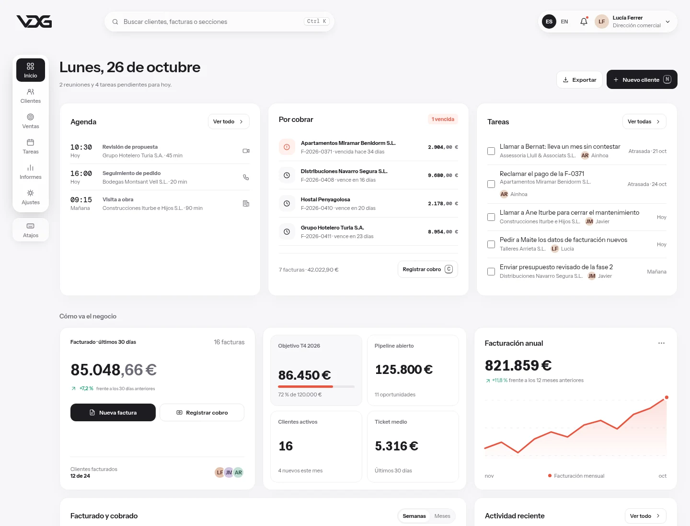
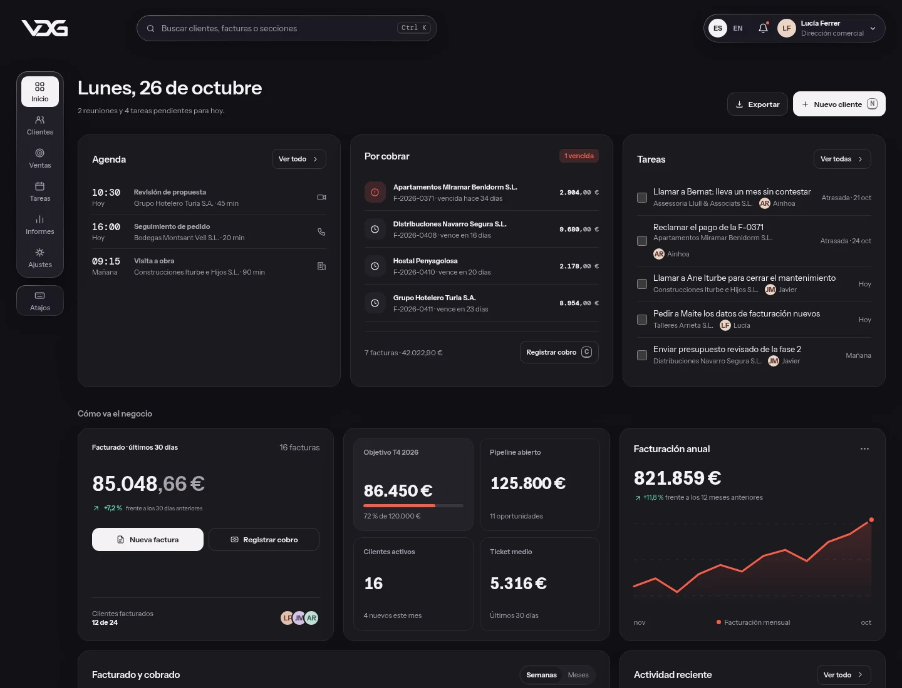
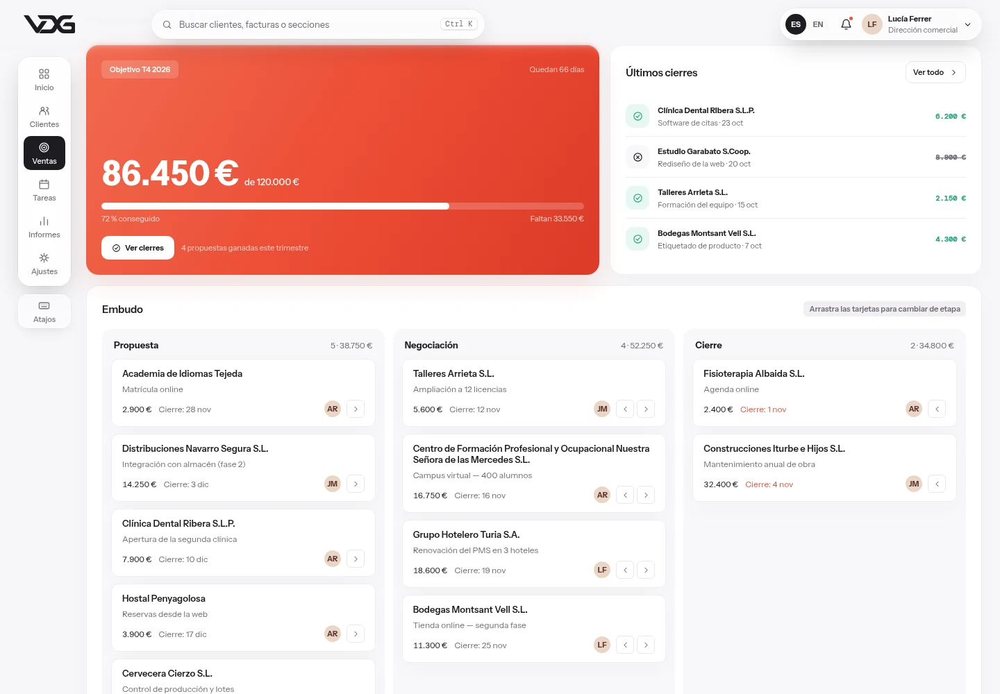
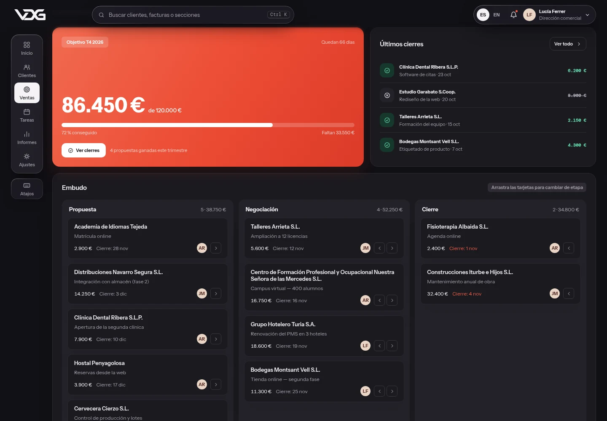
Cómo se comporta
Lente
No solo desenfoca: curva lo que hay detrás en los bordes, como un cristal grueso. Es lo que más lo distingue de un simple desenfoque.
Brillo especular
Un filo de luz más intenso arriba a la izquierda y abajo a la derecha dibuja la silueta, y un resplandor nace bajo el puntero.
Sombra adaptativa
Casi invisible sobre el fondo liso; más marcada cuando hay contenido desplazándose por debajo.
Borde de scroll
El contenido se disuelve suavemente al llegar bajo la cabecera, en lugar de cortarse en seco.
Dos grosores
Normal en controles (buscador, barra de herramientas, barra del móvil); grueso, más opaco y más desenfocado, en menús y menú lateral.
Se adapta al uso
La barra del móvil se compacta en una cápsula de iconos al bajar y se despliega al subir; los menús se materializan desde su control.
Apps y webs
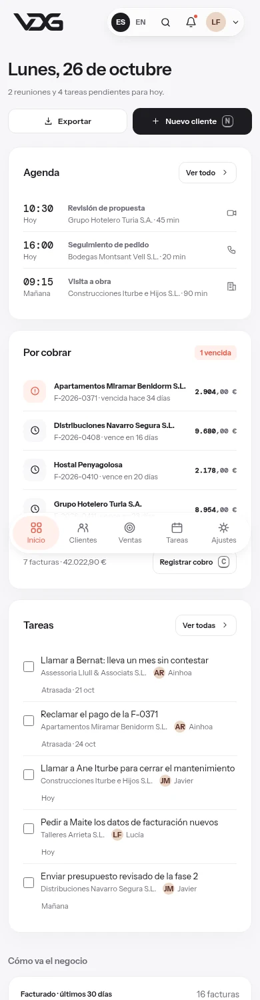
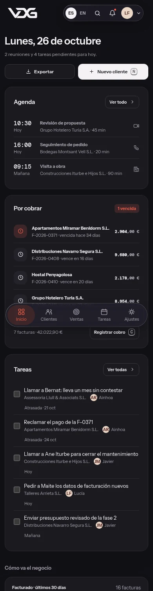
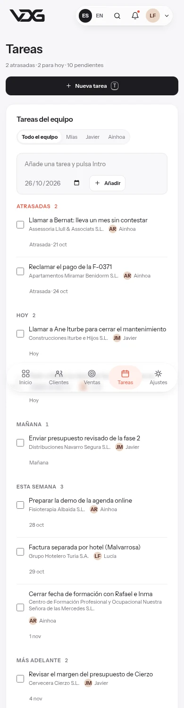
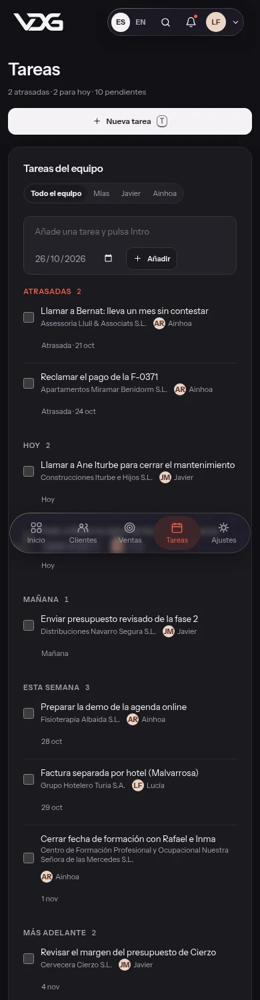
Apps de gestión (CRM, CodePanel)
- Fondo gris cálido liso y contenido sólido: tarjetas, tablas, formularios y modales.
- Cristal en la cabecera fija, el menú lateral, la barra del móvil y los menús desplegables.
- Los modales son sólidos: el velo de detrás ya separa, y un cristal encima solo los volvería grises.
Webs (valentindg.com, portafolio, CV)
- Navegación en píldora de cristal que flota sobre la página.
- Puede haber un brillo suave neutro o coral detrás de la portada, para que el cristal tenga algo que mostrar.
- Las secciones y tarjetas de contenido, sólidas.
Receta
56 · 86 %
Blanco del cristal normal y del grueso (--glass-bg, --glass-bg-thick). En oscuro, grafito al 46 y 84 %.
4 · 24 px
Desenfoque normal y grueso, con saturación al 190 % (--glass-blur, -thick, --glass-saturate). Poco desenfoque en los controles: si no, se come la lente.
Lente · 40
Desplazamiento máximo en el borde (--glass-lens). El mapa lo genera glass.js para cada pieza.
Filo de luz
Borde especular, brillo interior y resplandor bajo el puntero (--glass-rim, --glass-highlight, --glass-glow).
- Se aplica con la clase .lg (y .is-thick para el grueso) y un data-lg con nombre fijo, para que design-system/glass.js le genere la lente.
- El cristal se dibuja en ::before, no en el elemento: así un menú que se abre dentro de la barra puede seguir desenfocando la página.
- Nunca cristal sobre cristal: lo que va encima usa rellenos translúcidos (--glass-fill).
- El texto sobre cristal va siempre en tinta (o casi blanco en oscuro). El tinte de color, solo en la acción principal y la pestaña activa.
- Las barras que flotan pueden ser píldora; menús y menú lateral usan --radius-card.
- La lente solo funciona en Chrome y Edge, que aceptan filtros SVG en backdrop-filter. Safari y Firefox muestran el mismo cristal sin la curvatura.
- Accesibilidad como en el sistema: «reducir transparencia» lo vuelve esmerilado, «más contraste» lo vuelve sólido con borde y «reducir movimiento» quita el resplandor y las animaciones. Al imprimir, todo es sólido.
09
Componentes
Los componentes de abajo usan design-system/components.css, la misma hoja de estilos que la plantilla del CRM.
Botones
Principal en tinta, secundario en blanco con borde, peligro en coral solo para acciones destructivas. Uno principal por zona.
Estados: el hover cambia el fondo, nunca la posición; el foco siempre es visible.
Etiquetas y estados
Formularios
Revisa el CIF, NIF o NIE: la letra o el dígito de control no cuadran.
Etiqueta siempre visible encima del campo. El error va debajo, en coral, y dice qué hacer, no solo qué falla.
Selección
Tarjetas, listas y avisos
Por cobrar
1 vencidaPulsa T para crear una tarea.
Cada lista vacía tiene su propio mensaje con algo que hacer. Las acciones que se pueden deshacer lo dicen en el aviso.
Asistente
El asistente de IA vive en una burbuja abajo a la derecha. Responde con los datos del CRM y avisa solo de lo importante. Burbuja, aviso y ventana son capa de navegación, así que van de cristal; lo de dentro es sólido.
Apartamentos Miramar Benidorm S.L. lleva 34 días sin pagar la F-2026-0371 (2.904 €).
Asistente
Responde con los datos del CRM¿Quién me debe dinero?
Tienes 42.023 € pendiente de cobro y 2.904 € ya vencido. Esta es la factura vencida:
Según 7 facturas pendientes
Responde con los datos de esta demo. Comprueba las cifras importantes antes de decidir.
Cómo responde
- Con forma, no solo texto: cifra destacada (con los céntimos atenuados), minigráfico, filas que llevan a la ficha o la factura.
- Siempre dice de dónde sale el dato («Según 7 facturas pendientes»).
- El texto llega palabra a palabra; la respuesta terminada se anuncia a los lectores de pantalla.
- Con «Ocultar importes» tampoco muestra cifras.
Cómo habla
- Se llama «Asistente»: sin nombre propio, sirve para cualquier CRM.
- De tú, frases cortas y la cifra primero: «Tienes 42.023 € pendiente de cobro».
- Si no sabe algo, lo dice y propone cómo preguntarlo. Nunca inventa un dato.
- Sin destellos ✨ ni «mágico»: el punto coral es su único símbolo.
En la plantilla: js/components/assistant.js pinta la interfaz y js/ai/assistant.js es el único punto que cambia para conectar una IA real a través de tu servidor; la clave de la API nunca va en el navegador.
10
Modo claro y oscuro
Los dos temas comparten tokens: solo cambian sus valores. El oscuro no es un negativo; usa grises con un punto de violeta y sube la luminosidad del coral para mantener el contraste.
- El tema se aplica con data-theme="dark" en <html> y se recuerda por usuario.
- El logo de una tinta toma el color del texto, así que cambia solo.
- Al imprimir, todo sale en claro aunque la pantalla esté en oscuro.
- Prueba este manual en oscuro con el botón del índice: los códigos de color se recalculan.
11
Responsive
Se diseña para escritorio y se resuelve hasta 320 px de ancho. En móvil la navegación pasa abajo, las rejillas se apilan y las tablas se desplazan en horizontal en lugar de encogerse.
| Punto de corte | Qué cambia |
|---|---|
| > 1170 px | Escritorio completo: barra lateral, cabecera con buscador, rejillas de 3 columnas. |
| ≤ 1170 px | Menos relleno; el perfil muestra solo el avatar. |
| ≤ 940 px | Rejillas a 2 columnas o 1; ficha de cliente apilada. |
| ≤ 620 px | Móvil: navegación inferior en una cápsula de cristal que se compacta al bajar, una columna, botones a todo el ancho, buscador como icono. |
| ≤ 385 px | Móvil pequeño: logo de 22 px y huecos mínimos. |
| hover: none | Las acciones que en escritorio aparecen al pasar el ratón quedan siempre visibles. |
12
Movimiento
El movimiento explica de dónde viene algo, nunca entretiene. Es corto, con una única curva de aceleración, y desaparece si el sistema pide reducir movimiento.
Rápido · 150 ms
Fundidos, cambios de color, aparición del fondo del modal.
Base · 200 ms
Menús, botones, interruptores, entrada del modal.
Lento · 300 ms
Entrada de una página nueva (sube 5 px y aparece).
Gráficos · 450 ms
Barras y progreso que cambian de valor.
- Curva única: --ease-ui · cubic-bezier(.23, 1, .32, 1), que arranca rápido y frena suave.
- Lo que entra se desplaza 5–10 px como máximo. Nada rebota, gira ni late.
- Con prefers-reduced-motion, las animaciones duran 0,01 ms.
- Sin animaciones decorativas en bucle; la única es el brillo del esqueleto mientras carga.
13
Voz y tono
Escribimos como habla alguien que sabe de lo suyo y respeta tu tiempo. En español de España, de tú, con frases cortas y datos concretos.
| Evitar | Mejor | Por qué |
|---|---|---|
| ¡Bienvenido de nuevo! 👋 | Miércoles, 21 de octubre | Informar, no saludar. |
| Error: datos inválidos | Revisa el CIF: el dígito de control no cuadra. | Decir qué hacer. |
| Entradas y salidas de dinero de un vistazo | Facturado y cobrado | El título ya lo explica. |
| ¡Genial! Tu factura se ha creado con éxito 🎉 | Factura F-2026-0415 emitida | Confirmar con el dato. |
| No hay datos disponibles | Todavía no tiene facturas · Nueva factura | Un vacío siempre ofrece el siguiente paso. |
| Introducí / Hacé clic | Escribe / Pulsa | Español de España, de tú. |
- Sin emojis ni signos de exclamación en la interfaz.
- Mayúscula solo al principio de la frase: «Nueva factura», no «Nueva Factura».
- Los datos de ejemplo son verosímiles: nombres, CIF, direcciones e importes como los de un cliente real, con sus imperfecciones.
14
Aplicaciones
Dónde está la marca hoy. Solo se muestra lo que está publicado; cada pieza nueva se añade aquí cuando se use.
| Dónde | Dirección | Marca hoy |
|---|---|---|
| GitHub | github.com/Valentindg2506 | Avatar con el logo original |
| linkedin.com/in/valentin-antonio-de-gennaro | Ninguna: la foto de perfil es personal y no se cambia por el logo | |
| Web personal | valentindg.com | Publicada el 26 de octubre de 2026: Instrument Sans, neutros cálidos, coral, logo | nombre y navegación de cristal |
| Portafolio | portafolio.valentindg.com | Publicada el 26 de octubre de 2026: Instrument Sans, neutros cálidos, coral, logo | nombre y navegación de cristal |
| Currículum | cv.valentindg.com | Publicada el 26 de octubre de 2026: Instrument Sans, neutros cálidos, coral, logo | nombre y navegación de cristal |
GitHub
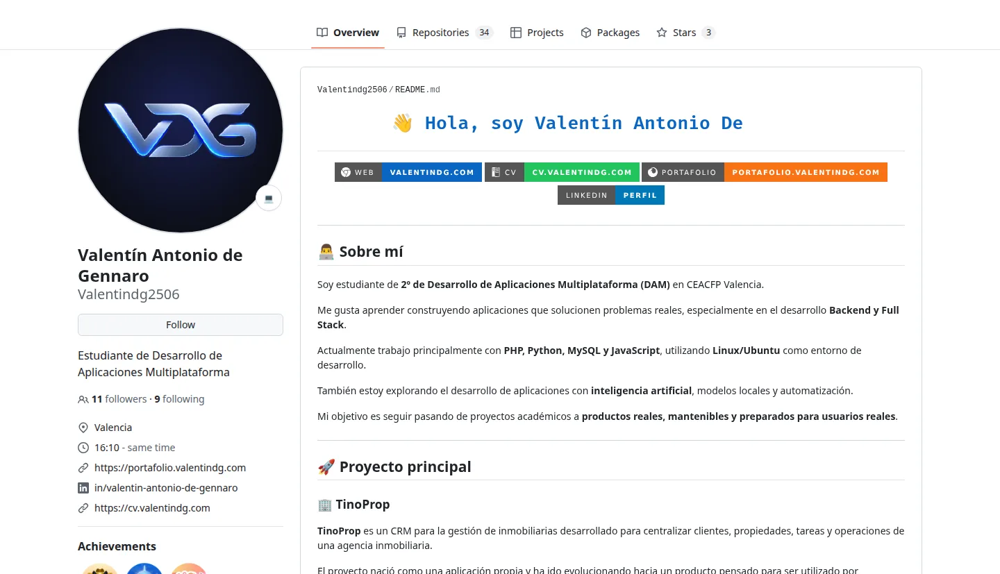
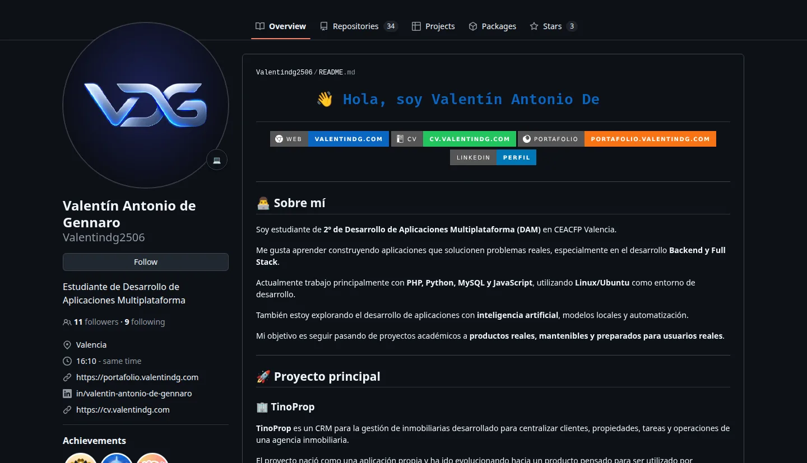
Webs
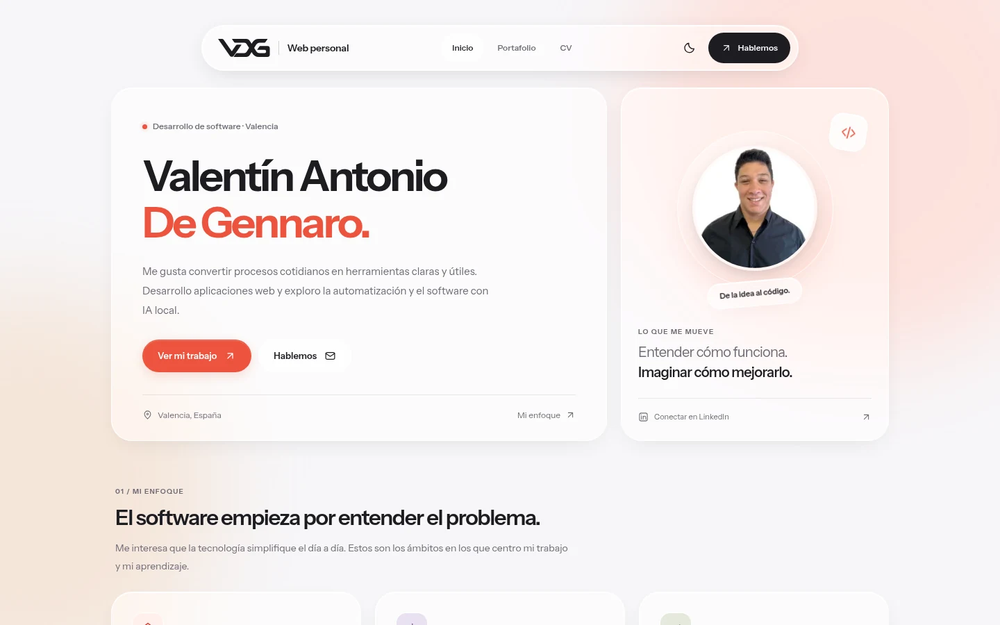
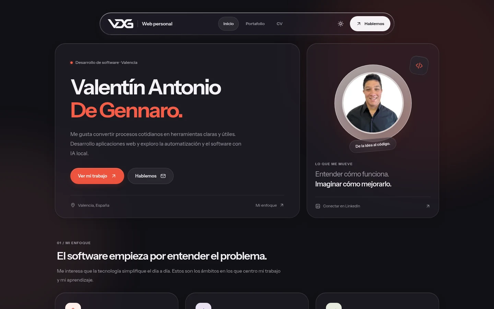
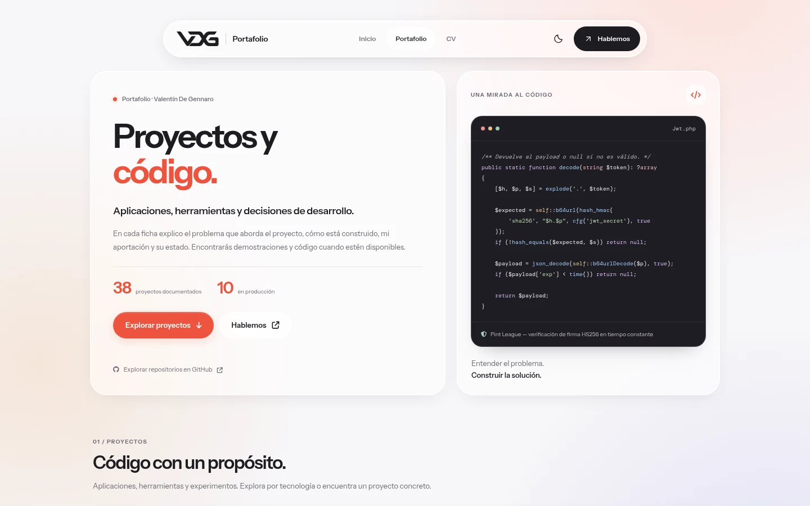
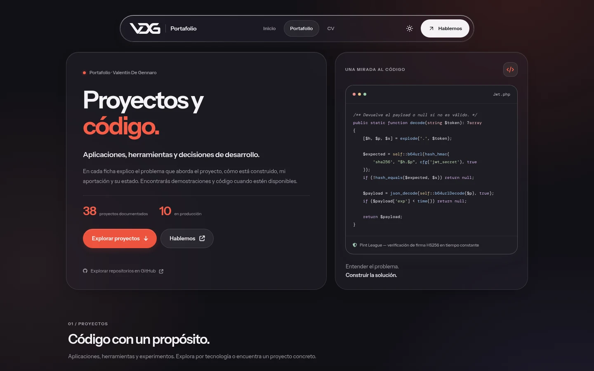
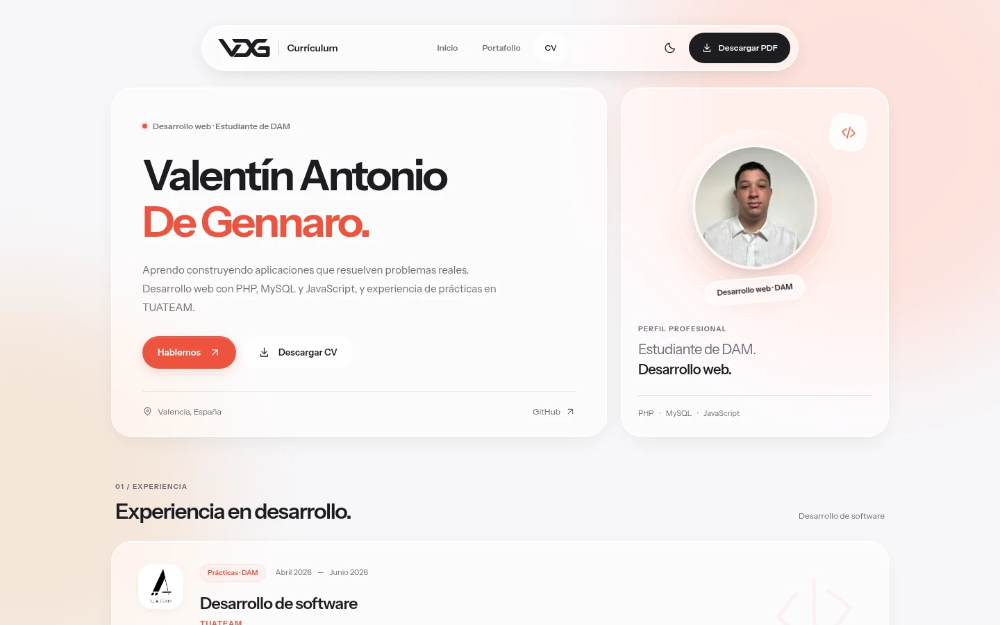
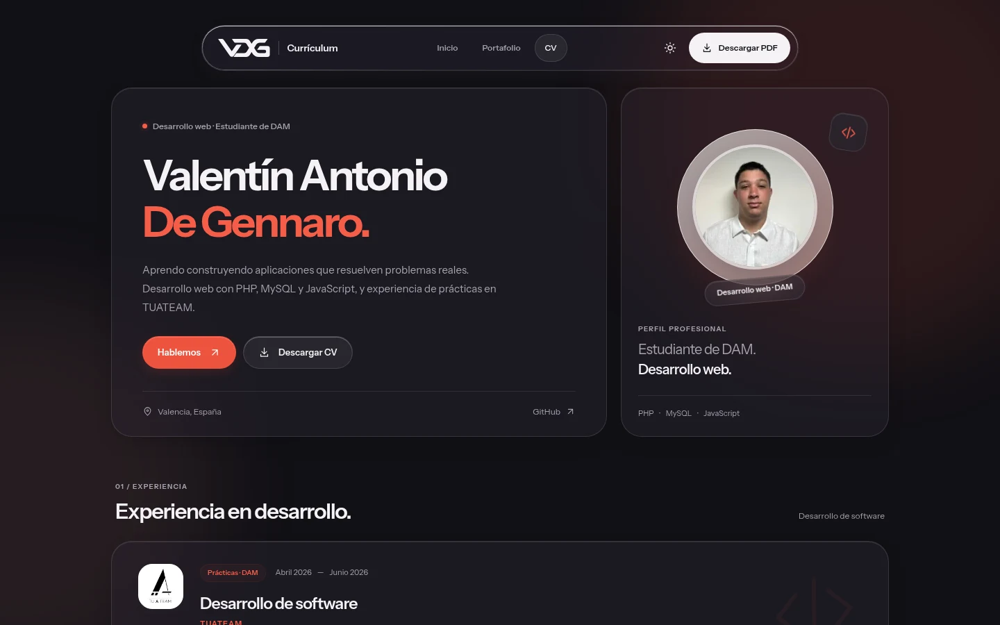
Capturas de las tres webs publicadas, 26 de octubre de 2026: Instrument Sans, neutros cálidos, coral, «logo | nombre» y navegación de Liquid Glass con su lente.
Plantilla CRM
15
Recursos
Todo lo necesario para aplicar la marca en un proyecto nuevo.